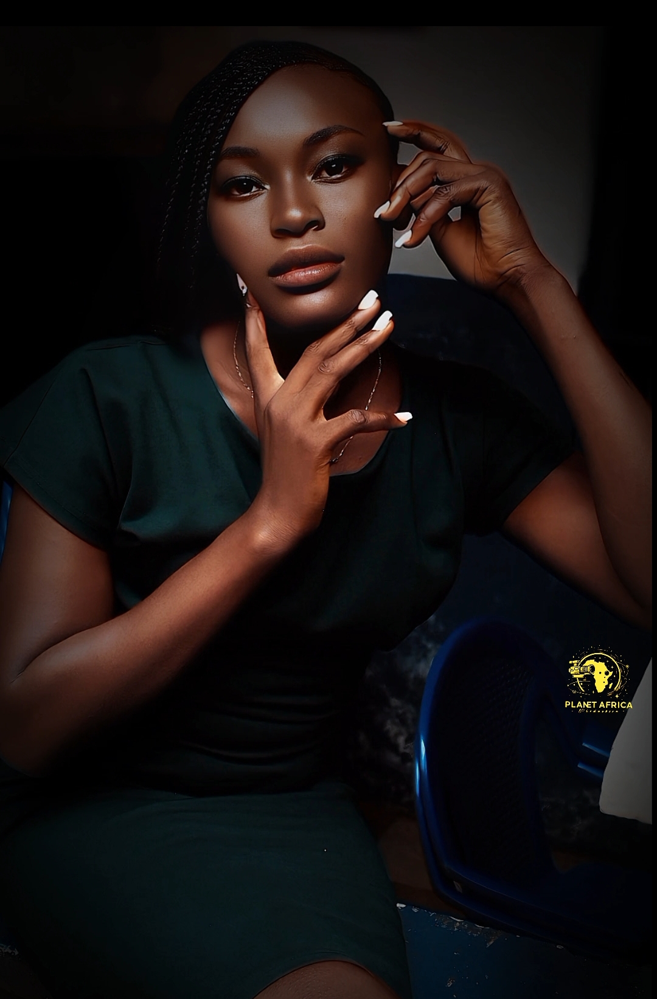

🬠Portrait de Tchida Fopi Anabelle Florile – Une Étoile Montante du Cinéma Camerounais
Nom complet : Tchida Fopi Anabelle Florile
Date de naissance : 30 décembre 2001
Nationalité : Camerounaise
Première apparition : Série Héritiers, produite par Planète Africa et réalisée par Venceslas Guedbigué (Venzy)
🌟 Une première expérience pleine de promesse
Avec un regard profond et un sourire confiant, Tchida Anabelle s'impose déjà comme l’une des figures prometteuses du cinéma camerounais. Née le 30 décembre 2001, cette jeune actrice fait ses premiers pas dans l’univers cinématographique grâce à la série à succès "Héritiers", une production signée Planète Africa, sous la direction de Venzy, réalisateur reconnu pour sa vision audacieuse et humaine.
Loin d’être intimidée par ses débuts, Anabelle embrasse avec passion son tout premier rôle à l’écran. Sa performance dans Héritiers ne passe pas inaperçue, révélant une actrice pleine de sensibilité, d’émotion et d'authenticité.
🤠« Le monde du cinéma est un moyen pour les acteurs et actrices d'exprimer de l'amour, la peine, et les problèmes que endure la société. » – Tchida Fopi Anabelle Florile
ğŸ Un choix de cÅ“ur et de vocation
Portée par un désir sincère d’explorer les réalités de la vie à travers l’écran, Anabelle confie que le cinéma est pour elle un canal de connexion au monde réel :
🗣️ « J'ai choisi ce métier pour être plus connectée au monde actif et faire plus de découvertes dans le monde du cinéma. »
📺 À suivre dans la série "Héritiers"
Tchida Fopi Anabelle Florile vous donne rendez-vous dans la nouvelle saison de la série Héritiers, où elle incarne un rôle touchant, engagé et marquant. Un projet qui promet de captiver les téléspectateurs et d’asseoir sa place parmi les talents émergents de l’industrie cinématographique camerounaise.
🬠« Restez scotchés, car vous serez épatés par la nouvelle sortie de la série Héritiers ! »
Planète Africa est fier d’accompagner cette jeune actrice dans ses premiers pas et invite tous les passionnés de cinéma africain à suivre de près sa brillante évolution.
📢 Tchida Anabelle est bien plus qu'une débutante : c'est une voix nouvelle, authentique, et pleine d’avenir.